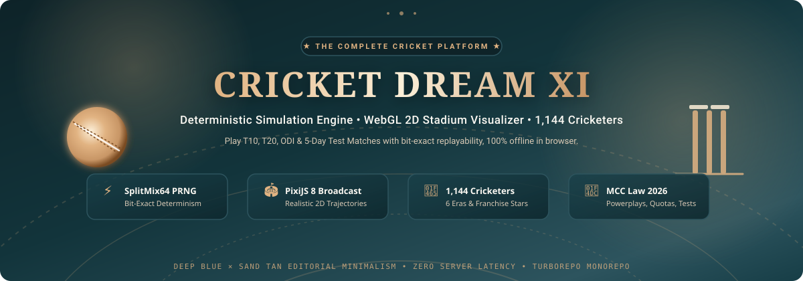
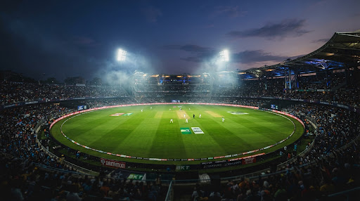

Build your XI, call the tactics, and watch every ball resolve.

A broadcast-style match engine that keeps the score, strategy, and story in one place.
T10 chaos. T20 matchups. ODI pacing. Test patience. The rules change the game.
Powerplay → middle overs → death.
Attack the gaps. Protect the rope.
Three powerplay phases.
Build an innings, then cash it in.
Time is the tactic.
Wear down the pitch. Break the partnership.
Same seed, same match.
Every decision is reproducible.
Bowling plans, field presets, and batting intent feed the same authoritative match state.
Cricket Dream XI — a living scorecard for people who want to captain the story.